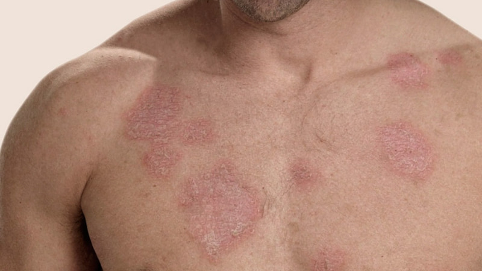

Enciclopedia médica para estudiantes de ingeniería de la salud y medicina.
Barra de navegación:
Lupus Eritematoso Sistémico
Fecha: 10 de septiembre de 2024
Autores: Jani Natasha Paredes Villalba y Lucía Giménez Pelegrín
Descripción:
En las personas con Lupus, el sistema inmunitario del cuerpo,
el cual está diseñado para combatir las sustancias ajenas al
organismo, se vuelve hiperactivo, formando anticuerpos que
atacan a los tejidos y a órganos sanos, incluyendo la piel,
las articulaciones, los riñones, el cerebro, el corazón,
los pulmones y la sangre.

Ilustración que muestra el impacto del lupus en el cuerpo humano.
Causas:
Factores genéticos: La tasa de coincidencia en gemelos monocigotos
es de aproximadamente 25% y en gemelos dicigotos es del 2%.
Los genes del complejo mayor de histocompatibilidad (HLA-A1, B8 y DR3)
están ligados al lupus. También se han identificado locus en ratones
(Sle1, Sle2 y Sle3) que promueven la enfermedad.
Factores ambientales: La radiación ultravioleta es el factor ambiental más
ligado al lupus, exacerbando la enfermedad en el 70% de los pacientes.
Defectos en la apoptosis: Defectos en la apoptosis pueden contribuir a la
persistencia de clones autorreactivos de células B y T, lo que podría
desencadenar enfermedades autoinmunes como el lupus.
Alteraciones inmunológicas: Desequilibrio entre TNF-alfa y su inhibidor soluble.
Niveles elevados de IL-10 e interferón alfa.
Síntomas:
Los síntomas más frecuentes son: inflamación de órganos, tejidos y células.
Cabe resaltar que ebido a la presencia de autoanticuerpos y complejos inmunitarios. La exposición a radiación ultravioleta puede exacerbar los síntomas, como erupciones cutáneas.
Pruebas y exámenes:
Anticuerpos anti-DNA de doble cadena: Son los anticuerpos más estudiados en lupus y constituyen un subgrupo de anticuerpos antinucleares.
Niveles séricos de IL-10 e interferón alfa: Elevados en pacientes con lupus y se correlacionan con la actividad de la enfermedad.
Cantidad de células apoptóticas: Aumentada en pacientes con LES.
Tratamientos:
Algunos de los métodos para abordar esta enfermedad incluyen inmunosupresores, corticoides y antipalúdicos para controlar la respuesta autoinmune y la inflamación.
Expectativas:
La enfermedad del Lupus puede ser incapacitante pero, gracias al tratamiento, la mayoría de pacientes pueden llevar una vida normal en el entorno laboral y familiar. Es posible que en el trabajo se tengan que hacer algunas adaptaciones para poder seguir el ritmo sin dificultad, pero esto dependerá de cada persona.